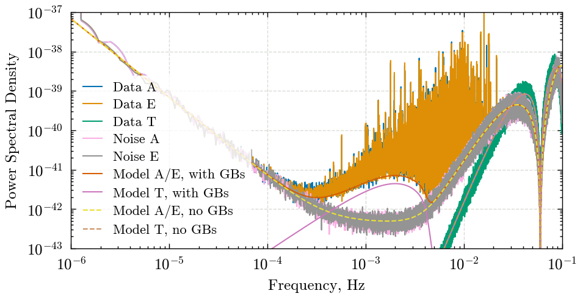
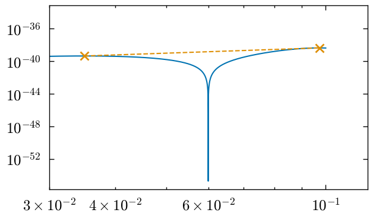
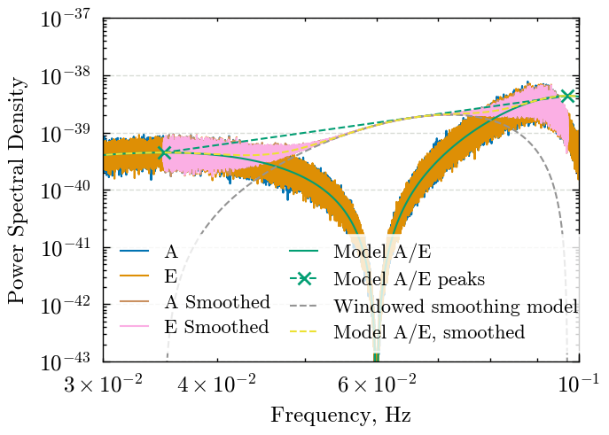
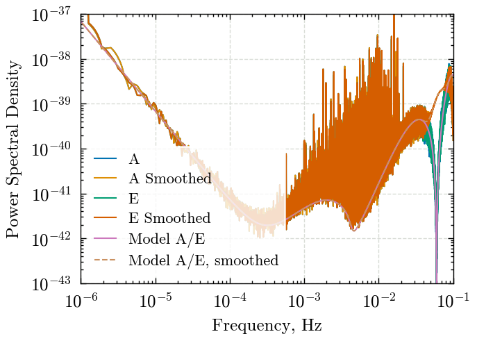

Estimating PSDs#
This notebook should be run to get estimated PSDs from the LDC sangria dataset, as well as saving/smoothing the sangria noise model which contains unresolvable galactic binaries
import numpy as np
from copy import deepcopy
from pycbc.types import TimeSeries, FrequencySeries
from pycbc.psd import interpolate
import ldc.io.hdf5 as hdfio
import ldc.lisa.noise.noise as ldc_noise
from scipy.signal import windows
from matplotlib import pyplot as plt
plt.style.use('../paper.mplstyle')
/Users/gareth/miniconda3/envs/env_lisa_premerger_sangria/lib/python3.11/site-packages/pycbc/types/array.py:36: UserWarning: Wswiglal-redir-stdio:
SWIGLAL standard output/error redirection is enabled in IPython.
This may lead to performance penalties. To disable locally, use:
with lal.no_swig_redirect_standard_output_error():
...
To disable globally, use:
lal.swig_redirect_standard_output_error(False)
Note however that this will likely lead to error messages from
LAL functions being either misdirected or lost when called from
Jupyter notebooks.
To suppress this warning, use:
import warnings
warnings.filterwarnings("ignore", "Wswiglal-redir-stdio")
import lal
import lal as _lal
# This cell contains the information about certain input parameters which are
paper_plot_dir = "../paper/images/dataset/"
input_data = '../datasets/LDC2_sangria_hm_training.hdf' # The Sangria dataset
output_format = '{channel}_sangria_hm_PSD.txt' # This is the format used for saving the datasets for estimated, not smoothed, PSDs
smoothed_output_format = '{channel}_sangria_hm_SMOOTHED_PSD.txt' # This is the format used for saving the datasets for estimated, smoothed, PSDs
segment_duration = 1576800 # Used in the PSD estimation
delta_t = 5. # Sampling rate of the Sangria dataset (s)
# Load in the sangria dataset
tdi_ts, tdi_descr = hdfio.load_array(input_data, name="obs/tdi")
X = tdi_ts['X']
Y = tdi_ts['Y']
Z = tdi_ts['Z']
# Convert to AET timeseries
A = (Z - X)/np.sqrt(2)
E = (X - 2*Y + Z)/np.sqrt(6)
T = (X + Y + Z)/np.sqrt(3)
A_ts = TimeSeries(A, delta_t=delta_t)
E_ts = TimeSeries(E, delta_t=delta_t)
T_ts = TimeSeries(T, delta_t=delta_t)
# Calculate the PSDs
A_psd = A_ts.psd(segment_duration)
E_psd = E_ts.psd(segment_duration)
T_psd = T_ts.psd(segment_duration)
# Interpolate onto a grid
A_psd = interpolate(A_psd, A_ts.delta_f)
E_psd = interpolate(E_psd, E_ts.delta_f)
T_psd = interpolate(T_psd, T_ts.delta_f)
No CuPy
No CuPy or GPU PhenomHM module.
No CuPy or GPU response available.
No CuPy or GPU interpolation available.
# Save to files for use in later analysis (comment out for building data release pages)
# A_psd.save(output_format.format(channel='A'))
# E_psd.save(output_format.format(channel='E'))
# T_psd.save(output_format.format(channel='T'))
Now lets go through and remove all signals from the data, this will give us an estimate of the noise which we can compare to the model we used in the zero latency filter paper
residual_A = deepcopy(A_ts)
residual_E = deepcopy(E_ts)
signal_types = ['mbhb', 'vgb', 'dgb', 'igb']
for signal_type in signal_types:
tdi_ts, tdi_descr = hdfio.load_array(input_data, name=f'/sky/{signal_type}/tdi')
X = tdi_ts['X']
Y = tdi_ts['Y']
Z = tdi_ts['Z']
A_sig = (Z - X)/np.sqrt(2)
E_sig = (X - 2*Y + Z)/np.sqrt(6)
residual_A.data -= A_sig
residual_E.data -= E_sig
residual_A_psd = residual_A.psd(segment_duration)
residual_E_psd = residual_E.psd(segment_duration)
# Interpolate onto a grid
residual_A_psd = interpolate(residual_A_psd, A_ts.delta_f)
residual_E_psd = interpolate(residual_E_psd, E_ts.delta_f)
Lets compare this to the modelled PSD
# This is the model that was used for sangria which includes the unresolvable galactic binaries
sangria_model_freqs = A_psd.sample_frequencies
nm_withgb = ldc_noise.get_noise_model("sangria", sangria_model_freqs, wd=True)
sangria_model_ae_withgb = nm_withgb.psd(option="A")
sangria_model_t_withgb = nm_withgb.psd(option="T")
# Now lets _also_ get the PSD model which doesnt include GBs - this matches the one used in the zero latency filter paper
nm_nogb = ldc_noise.get_noise_model("sangria", sangria_model_freqs, wd=False)
sangria_model_ae_nogb = nm_nogb.psd(option="A")
sangria_model_t_nogb = nm_nogb.psd(option="T")
/Users/gareth/miniconda3/envs/env_lisa_premerger_sangria/lib/python3.11/site-packages/pycbc/types/array.py:390: RuntimeWarning: divide by zero encountered in divide
return self._data.__rtruediv__(other)
/Users/gareth/miniconda3/envs/env_lisa_premerger_sangria/lib/python3.11/site-packages/pycbc/types/array.py:435: RuntimeWarning: divide by zero encountered in power
return self._data ** other
/Users/gareth/miniconda3/envs/env_lisa_premerger_sangria/lib/python3.11/site-packages/pycbc/types/array.py:348: RuntimeWarning: invalid value encountered in multiply
return self._data * other
Lets quickly plot these so we can see what is happening:
cycle = plt.rcParams['axes.prop_cycle'].by_key()['color']
width = plt.rcParams["figure.figsize"][0] * 1.5
height = plt.rcParams["figure.figsize"][1] * 1.25
# Lets plot the PSDs to compare them:
fig, ax = plt.subplots(1, figsize=(width, height))
ax.loglog(
A_psd.sample_frequencies,
A_psd,
label='Data A',
color=cycle[0]
)
ax.loglog(
E_psd.sample_frequencies,
E_psd,
label='Data E',
color=cycle[1]
)
ax.loglog(
T_psd.sample_frequencies,
T_psd,
label='Data T',
color=cycle[2]
)
ax.loglog(
A_psd.sample_frequencies,
residual_A_psd,
label='Noise A',
color=cycle[6]
)
ax.loglog(
E_psd.sample_frequencies,
residual_E_psd,
label='Noise E',
color=cycle[7]
)
ax.loglog(
sangria_model_freqs,
sangria_model_ae_withgb,
label='Model A/E, with GBs',
color=cycle[3]
)
ax.loglog(
sangria_model_freqs,
sangria_model_t_withgb,
label='Model T, with GBs',
color=cycle[4]
)
ax.loglog(
sangria_model_freqs,
sangria_model_ae_nogb,
label='Model A/E, no GBs',
linestyle='--',
color=cycle[8]
)
ax.loglog(
sangria_model_freqs,
sangria_model_t_nogb,
label='Model T, no GBs ',
linestyle='--',
color=cycle[5]
)
ax.set_ylabel("Power Spectral Density")
ax.set_xlabel("Frequency, Hz")
ax.legend(loc='lower left')
ax.set_ylim([1e-43, 1e-37])
ax.set_xlim([1e-6, 1e-1])
ax.grid(zorder=-100)

Now, lets smooth out the dip at 0.06Hz. We want to do this for multiple cases, so lets define a function which smooths out the section between two frequencies
We will apply a window to the PSD, and the opposite window to a straight line between two points, the “smoothed” PSD will be the combination of the two
The line will be defined using the model PSD, so that it doesn’t wiggle too much. So lets find the peaks either side, so that we can ‘bridge the gap’
from scipy.signal import find_peaks
pks = find_peaks(
np.where(
np.logical_and(
sangria_model_freqs > 0.01,
sangria_model_freqs < 0.1
),
sangria_model_ae_withgb,
0
)
)[0]
print(pks)
section_lower, section_upper = sangria_model_freqs[pks]
print(section_lower, section_upper)
plt.loglog(sangria_model_freqs, sangria_model_ae_withgb)
plt.plot(sangria_model_freqs[pks], sangria_model_ae_withgb[pks], linestyle='--', marker='x')
plt.xlim(0.03, 0.12)
[1102984 3067167]
0.034975393201420596 0.09725922754946727
(0.03, 0.12)

def smooth_section(psd_freqseries, start_frequency, end_frequency, psd_model, psd_model_frequencies, psd_frequencies=False):
# We are going to get the "smoothing line" from the model, so that it
# isn't affected by the noise in the estimated PSD
model_section = np.logical_and(
psd_model_frequencies >= start_frequency,
psd_model_frequencies <= end_frequency
)
model_freqs = psd_model_frequencies[model_section]
model_y = psd_model[model_section]
start_x = model_freqs[0]
start_y = model_y[0]
end_x = model_freqs[-1]
end_y = model_y[-1]
slope = (np.log(end_y) - np.log(start_y)) / (np.log(end_x) - np.log(start_x))
intercept = np.log(start_y) - slope * np.log(start_x)
if isinstance(psd_freqseries, FrequencySeries) and psd_frequencies is not False:
raise ValueError('Do not provide psd_frequencies if psd_freqseries is a FrequencySeries')
elif isinstance(psd_freqseries, FrequencySeries):
psd_frequencies = psd_freqseries.sample_frequencies
smoothed_section_psd = np.logical_and(
psd_frequencies >= start_frequency,
psd_frequencies <= end_frequency
)
smoothed_freqs = psd_frequencies[smoothed_section_psd]
smoothed_y = psd_freqseries[smoothed_section_psd]
# Get the line at the frequencies in the PSD
line_out = np.exp(intercept) * (smoothed_freqs ** slope)
# use a window function to combine the line and the PSD
N = smoothed_freqs.size
window = windows.hann(N)
windowed_line = line_out * window
windowed_psd = smoothed_y * (1-window)
fuzzy_line = windowed_line + windowed_psd
psd_out = deepcopy(psd_freqseries.data)
psd_out[smoothed_section_psd] = fuzzy_line
return psd_out, fuzzy_line, line_out
smoothed_section = np.logical_and(A_psd.sample_frequencies >= section_lower, A_psd.sample_frequencies <= section_upper)
# We don't want to introduce a discontinuity here though!
# First, lets find the straight line (log-log space) which goes from the first removed datapoint to the last
smoothed_freqs = A_psd.sample_frequencies[smoothed_section]
A_psd_smoothed, fuzzy_line_A, model_line = smooth_section(A_psd, section_lower, section_upper, sangria_model_ae_withgb, sangria_model_freqs)
E_psd_smoothed, fuzzy_line_E, _ = smooth_section(E_psd, section_lower, section_upper, sangria_model_ae_withgb, sangria_model_freqs)
modelled_psd_smoothed, _, _ = smooth_section(sangria_model_ae_withgb, section_lower, section_upper, sangria_model_ae_withgb, sangria_model_freqs, psd_frequencies=sangria_model_freqs)
Save the PSDs for later use
# Remove nans:
A_psd_smoothed[0] = 0
E_psd_smoothed[0] = 0
modelled_psd_smoothed[0] = 0
sangria_model_ae_withgb[0] = 0
sangria_model_t_withgb[0] = 0
# np.savetxt(
# 'A_sangria_hm_SMOOTHED_PSD.txt',
# np.array([
# sangria_model_freqs,
# A_psd_smoothed
# ]).T
# )
# np.savetxt(
# 'E_sangria_hm_SMOOTHED_PSD.txt',
# np.array([
# sangria_model_freqs,
# E_psd_smoothed
# ]).T
# )
# np.savetxt(
# 'model_AE_SMOOTHED_PSD.txt',
# np.array([
# sangria_model_freqs,
# modelled_psd_smoothed
# ]).T
# )
# np.savetxt(
# 'model_AE_PSD.txt',
# np.array([
# sangria_model_freqs,
# sangria_model_ae_withgb
# ]).T
# )
# np.savetxt(
# 'model_T_PSD.txt',
# np.array([
# sangria_model_freqs,
# sangria_model_t_withgb
# ]).T
# )
Zoom in and see what is happening
width = plt.rcParams["figure.figsize"][0]
height = plt.rcParams["figure.figsize"][1] * 1.25
# Lets plot the PSDs to compare them:
fig, ax = plt.subplots(1, figsize=(width, height))
ax.loglog(
A_psd.sample_frequencies,
A_psd,
label='A',
color=cycle[0]
)
ax.loglog(
E_psd.sample_frequencies,
E_psd,
label='E',
color=cycle[1]
)
ax.loglog(
smoothed_freqs,
fuzzy_line_A,
label='A Smoothed',
color=cycle[5]
)
ax.loglog(
smoothed_freqs,
fuzzy_line_E,
label='E Smoothed',
color=cycle[6]
)
ax.loglog(
sangria_model_freqs,
sangria_model_ae_withgb,
label='Model A/E',
color=cycle[2]
)
ax.loglog(
sangria_model_freqs[pks],
sangria_model_ae_withgb[pks],
color=cycle[2],
linestyle='--',
marker='x',
label='Model A/E peaks'
)
ax.loglog(
smoothed_freqs,
model_line * windows.hann(model_line.size),
label='Windowed smoothing model',
linestyle='--',
c=cycle[7],
)
ax.loglog(
sangria_model_freqs,
modelled_psd_smoothed,
label='Model A/E, smoothed',
linestyle='--',
color=cycle[8]
)
ax.set_ylabel("Power Spectral Density")
ax.set_xlabel("Frequency, Hz")
ax.legend(loc='lower left', ncol=2)
ax.set_ylim([1e-43, 1e-37])
ax.set_xlim([3e-2, 1e-1])
ax.grid(zorder=-100)
fig.savefig(f'{paper_plot_dir}/figure_2_smoothing_60mHz.png')

Now zoom out and see what things look like
width = plt.rcParams["figure.figsize"][0]
height = plt.rcParams["figure.figsize"][1] * 1.25
# Lets plot the PSDs to compare them:
fig, ax = plt.subplots(1, figsize=(width, height))
ax.loglog(
A_psd.sample_frequencies,
A_psd,
label='A'
)
ax.loglog(
A_psd.sample_frequencies,
A_psd_smoothed,
label='A Smoothed'
)
ax.loglog(
E_psd.sample_frequencies,
E_psd,
label='E'
)
ax.loglog(
E_psd.sample_frequencies,
E_psd_smoothed,
label='E Smoothed'
)
ax.loglog(
sangria_model_freqs,
sangria_model_ae_withgb,
label='Model A/E'
)
ax.loglog(
sangria_model_freqs,
modelled_psd_smoothed,
label='Model A/E, smoothed',
linestyle='--'
)
ax.set_ylabel("Power Spectral Density")
ax.set_xlabel("Frequency, Hz")
ax.legend(loc='lower left')
ax.set_ylim([1e-43, 1e-37])
ax.set_xlim([1e-6, 1e-1])
ax.grid(zorder=-100)
